本章我们来讲一下如何在TKE上搭建jenkins这个CI/CD工具，这边我们在进行构建的时候可以自动生成一个slave pod来进行走流水线，流水线跑完之后会自动销毁。
部署jenkins的rbac权限 1 2 3 4 5 6 7 8 9 10 11 12 13 14 15 16 17 18 19 20 21 22 23 24 25 26 27 28 29 30 31 32 33 34 35 36 37 38 39 40 41 42 43 44 45 46 [root@VM_0_13_centos jenkins]# cat rbac.yaml apiVersion: v1kind: ServiceAccountmetadata: name: jenkins2 namespace: jenkins--- kind: ClusterRoleapiVersion: rbac.authorization.k8s.io/v1beta1metadata: name: jenkins2rules: - apiGroups: ["extensions" , "apps" ] resources: ["deployments" ] verbs: ["create" , "delete" , "get" , "list" , "watch" , "patch" , "update" ] - apiGroups: ["" ] resources: ["services" ] verbs: ["create" , "delete" , "get" , "list" , "watch" , "patch" , "update" ] - apiGroups: ["" ] resources: ["pods" ] verbs: ["create" ,"delete" ,"get" ,"list" ,"patch" ,"update" ,"watch" ] - apiGroups: ["" ] resources: ["pods/exec" ] verbs: ["create" ,"delete" ,"get" ,"list" ,"patch" ,"update" ,"watch" ] - apiGroups: ["" ] resources: ["pods/log" ] verbs: ["get" ,"list" ,"watch" ] - apiGroups: ["" ] resources: ["secrets" ] verbs: ["get" ]--- apiVersion: rbac.authorization.k8s.io/v1beta1kind: ClusterRoleBindingmetadata: name: jenkins2roleRef: apiGroup: rbac.authorization.k8s.io kind: ClusterRole name: jenkins2subjects: - kind: ServiceAccount name: jenkins2 namespace: jenkins
创建pvc进行jenkins的数据持久化 这边通过cbs卷挂载jenkins的数据
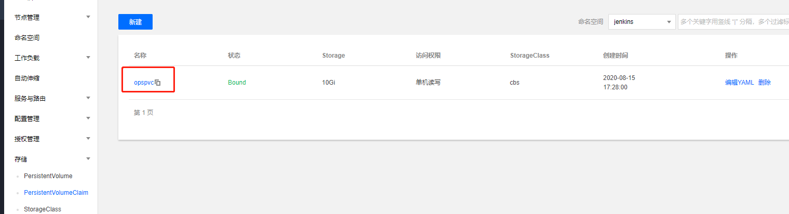
部署jenkins的应用 1 2 3 4 5 6 7 8 9 10 11 12 13 14 15 16 17 18 19 20 21 22 23 24 25 26 27 28 29 30 31 32 33 34 35 36 37 38 39 40 41 42 43 44 45 46 47 48 49 50 51 52 53 54 55 56 57 58 59 60 61 62 63 64 65 66 67 68 69 70 71 72 73 74 75 76 77 --- apiVersion: extensions/v1beta1 kind: Deployment metadata: name: jenkins2 namespace: kube-ops spec: template: metadata: labels: app: jenkins2 spec: terminationGracePeriodSeconds: 10 serviceAccountName: jenkins2 containers: - name: jenkins image: jenkins/jenkins:lts imagePullPolicy: IfNotPresent ports: - containerPort: 8080 name: web protocol: TCP - containerPort: 50000 name: agent protocol: TCP resources: limits: cpu: 1000m memory: 1Gi requests: cpu: 500m memory: 512Mi livenessProbe: httpGet: path: /login port: 8080 initialDelaySeconds: 60 timeoutSeconds: 5 failureThreshold: 12 readinessProbe: httpGet: path: /login port: 8080 initialDelaySeconds: 60 timeoutSeconds: 5 failureThreshold: 12 volumeMounts: - name: jenkinshome subPath: jenkins2 mountPath: /var/jenkins_home securityContext: fsGroup: 1000 volumes: - name: jenkinshome persistentVolumeClaim: claimName: opspvc --- apiVersion: v1 kind: Service metadata: name: jenkins2 namespace: kube-ops labels: app: jenkins2 spec: selector: app: jenkins2 type: NodePort ports: - name: web port: 8080 targetPort: web nodePort: 30002 - name: agent port: 50000 targetPort: agent
采用treafik暴露域名给jenkins 1 2 3 4 5 6 7 8 9 10 11 12 13 14 15 --- apiVersion: traefik.containo.us/v1alpha1 kind: IngressRoute metadata: name: jenkins namespace: jenkins spec: entryPoints: - web routes: - match: Host(`jenkins.tx.niewx.club`) kind: Rule services: - name: jenkins2 port: 8080
访问初始化jenkins 查看登录的初始密码，然后安装好推荐的插件，安装好之后配置账号，直接登录即可。
1 cat /var/lib /jenkins /secrets /initialAdminPassword
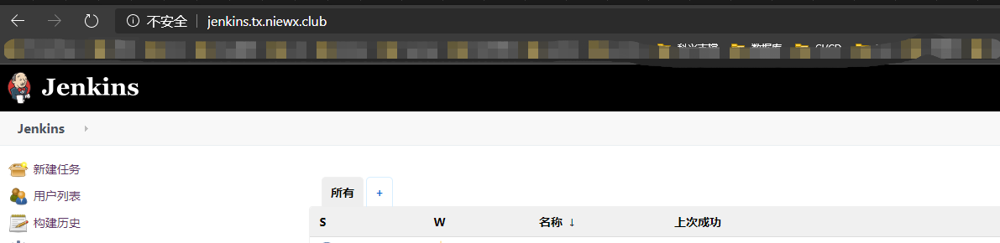
安装Kubernetes-plugin 插件 我这边已经安装好了，可以选择可选插件输入Kubernetes搜索找到插件进行安装
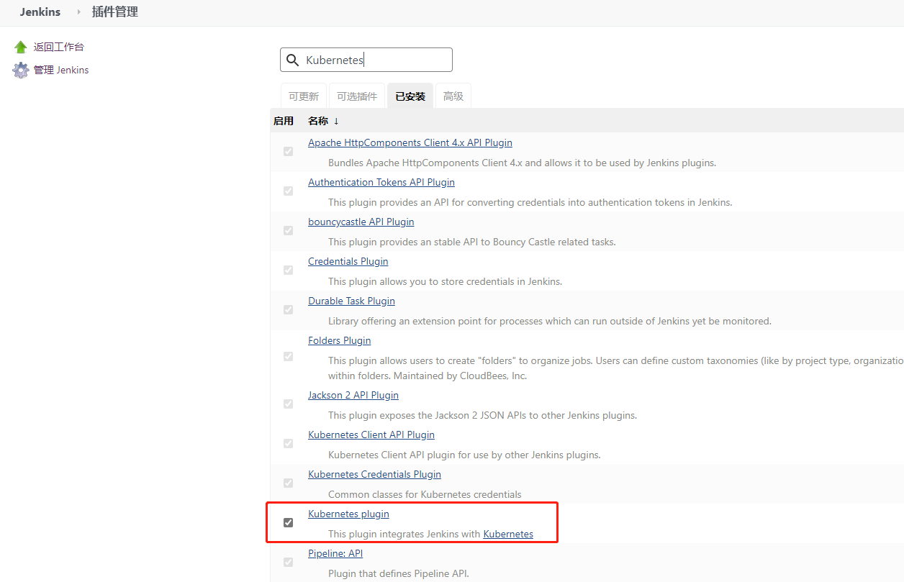
连接TKE集群 在“系统配置”面板最下方，选择“云”模块下的【新增一个云】>【Kubernetes】。如下图所示
对应的证书文件和token以及api地址可以从TKE集群中节点上的下面文件获取
集群证书获取
1 2 3 4 5 6 7 8 9 10 11 12 13 14 15 16 17 [root@VM_1_4_centos ~] -----BEGIN CERTIFICATE----- MIICyDCCAbCgAwIBAgIBADANBgkqhkiG9w0BAQsFADAVMRMwEQYDVQQDEwprdWJl cm5ldGVzMB4XDTIwMDYwMjAzMTYzNVoXDTMwMDUzMTAzMTYzNVowFTETMBEGA1UE AxMKa3ViZXJuZXRlczCCASIwDQYJKoZIhvcNAQEBBQADggEPADCCAQoCggEBANmh Z/tm6Ej66vNgkcRk4zirSGpoLpHaofq/q9eOE8zLr+QfzwNlDImeNfpX/OG/atz2 bl6DY4kAt7CsHUVs60leCIs1PZHY212vevlL/nWceLHqVeskynwT4xwJKI48DnwM UgABoXTqm3S2k02CRJcm0Ucx1pw+E0l0Cy/hJcEwa8kFaqsskHqL1jHhRGB4ENGO 6ocjEzZstZdjv1Ab1WoOmHhvvI3mT4Gqb1BSd3BFqlu0id1wJvIXuood0bYDTXSD KHHKZFOnrxwFFAg3ZxmrFDkfqfmILV0dcA4KKW/1q0g7+XepM2gZrrbwMAjVaOpH vPUEaLn/kJ1LSUNz09UCAwEAAaMjMCEwDgYDVR0PAQH/BAQDAgKUMA8GA1UdEwEB /wQFMAMBAf8wDQYJKoZIhvcNAQELBQADggEBAC6jddY1Y5ofHZkthZu8Hj2Op36q kY9pv1fpexcPXtcRuxgw6+mQjEzKraEDoDYdX/DkHkuYVulWl6Sqv+P9WRY+hLzH /K +GHh4uuuIlL+C6Uk1nV0clrznv+CqXKY9AZ8sY+x6l9d3hIxaDxwKWDfzJe2sUzMJZsbxyy4wIkwlG5+1lSD3YYRo1TooYGeFELD0OdGMrH9XRP0E/6Q5XdRBecH54 JA6Tj4vXI2SgOX4MWR47FFI7agBgATiOLLYGVcRqzf6rK/QFbOnT1R1JAR4= -----END CERTIFICATE-----
apiserver地址和token
1 2 3 4 5 6 7 8 9 10 11 12 13 14 15 16 17 18 19 [root@VM_1_4_centos ~]# cat .kube/config apiVersion: v1 clusters: - cluster: certificate-authority-data: LS0tLS1CRUdJNDQWJD.... server: https://169.xx.xx.xx:60002 name: local contexts: - context: cluster: local user: admin name: master current-context: master kind: Config preferences: {} users: - name: admin user: token: MUrM6Aj4qwgKKjwF....
将上述获取的填入集群配置
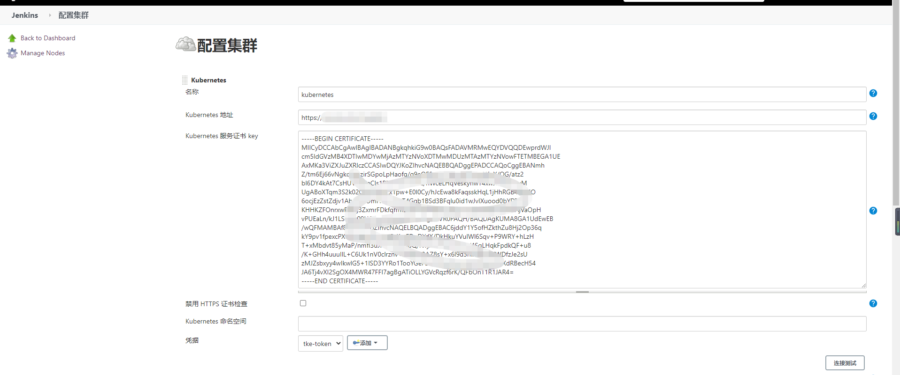
其他配置如下图所示，我们jenkins的master采用的hosts模式，所以这边直接用节点的8080端口
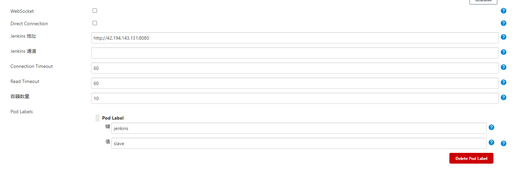
slave 的 pod的配置如下
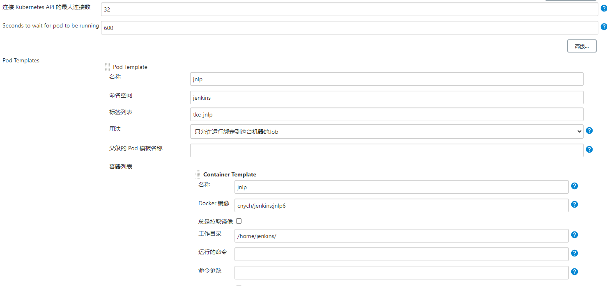
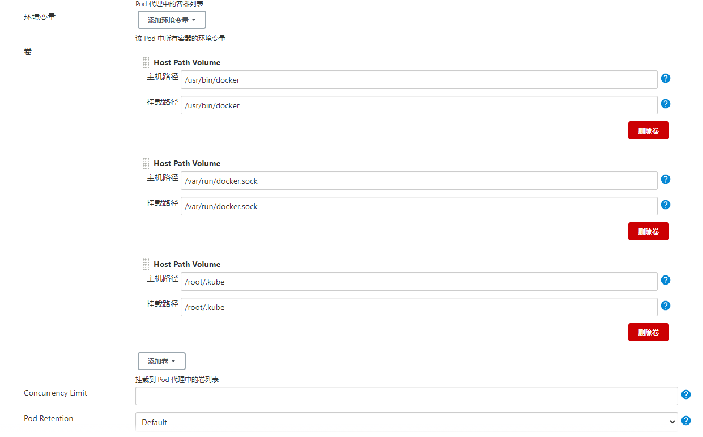
创建测试项目进行构建 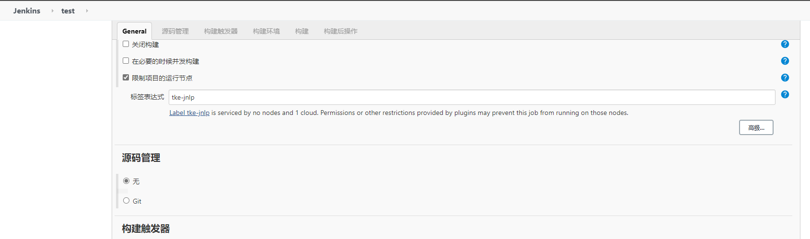
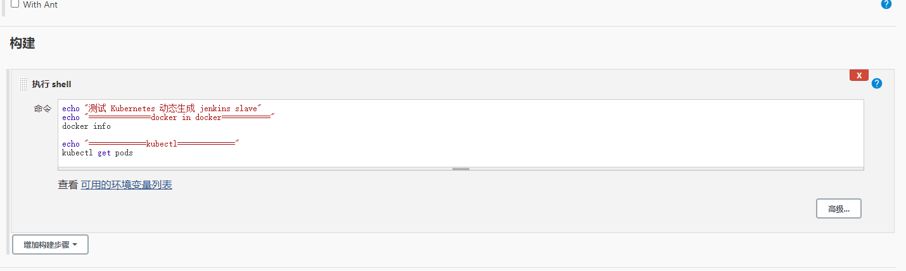
1 2 3 4 5 6 echo "测试 Kubernetes 动态生成 jenkins slave" echo "==============docker in docker===========" docker info echo "=============kubectl=============" kubectl get pods
执行任务构建 执行构建会自动生成一个slave pod，执行任务结束后会自动删除掉
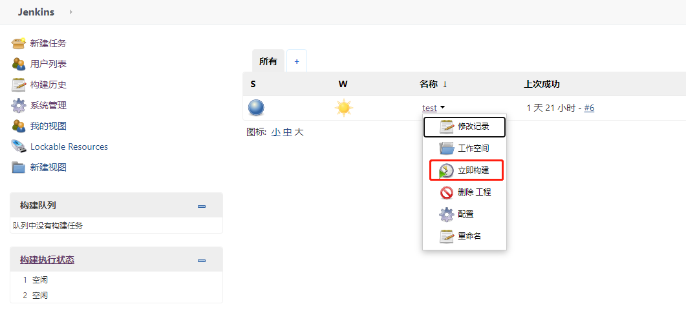
1 2 3 4 [root@ VM_1_4_centos ~]# kubectl get pod -n jenkins NAME READY STATUS RESTARTS AGE jenkins2-574678 b486-8 r4qz 1 /1 Running 0 2 d5h jnlp-7 zv3k 1 /1 Running 0 14 s
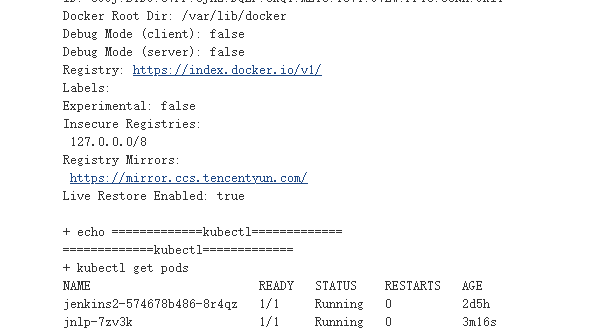
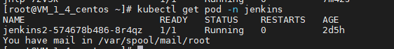
参考文档 https://www.qikqiak.com/post/kubernetes-jenkins1/
https://cloud.tencent.com/document/product/457/41396
欢迎访问 Vashon 的博客，博客和文章在完善中，请大家耐心等待。 若有问题或者有好的建议欢迎留言，笔者看到之后会及时回复。
为正常使用来必力评论功能请激活JavaScript